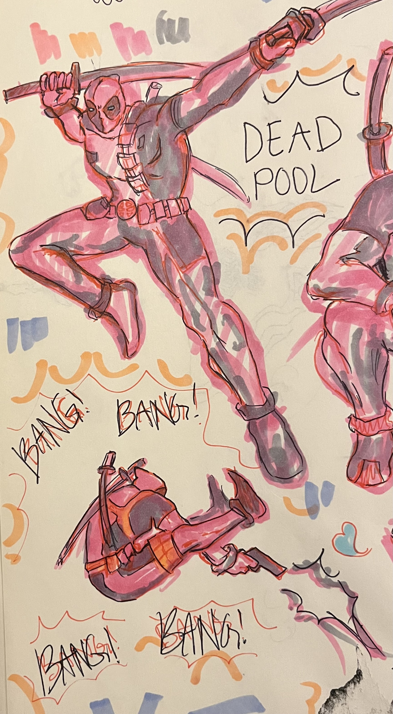
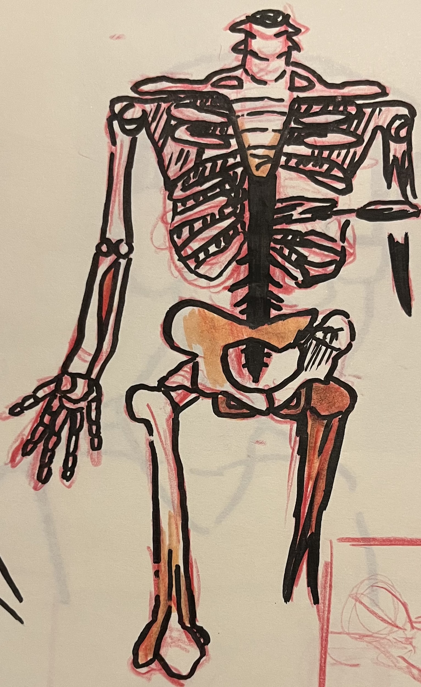
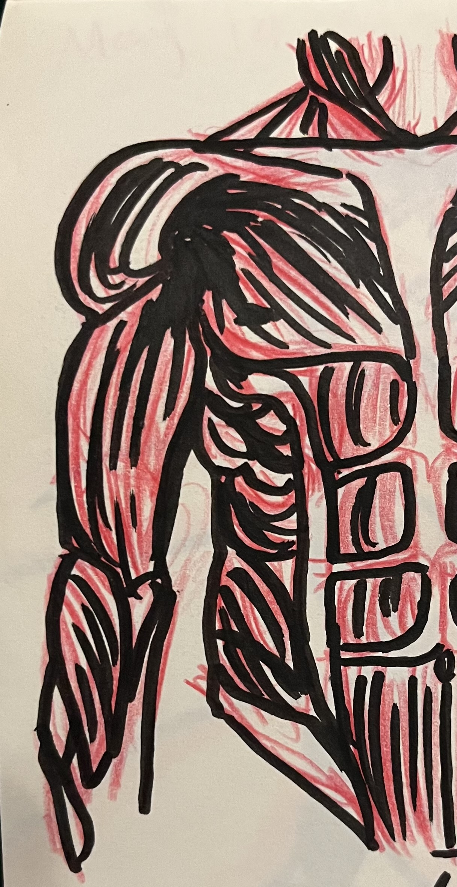

As a part of my portfolio I will show you my capabilities and skills as an artist. As you can see in the image on the far left, with the image of the character Deadpool, I have a decent sense of blocking colors and posing.On the other two images you can see my ability to draw anatomy. The middle image shows my study of the mid body's skeleton, while the farthest right image is my study of the torso's muscle layer.